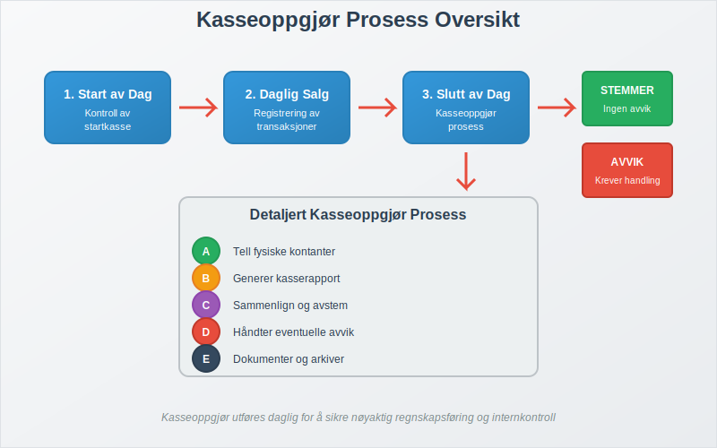
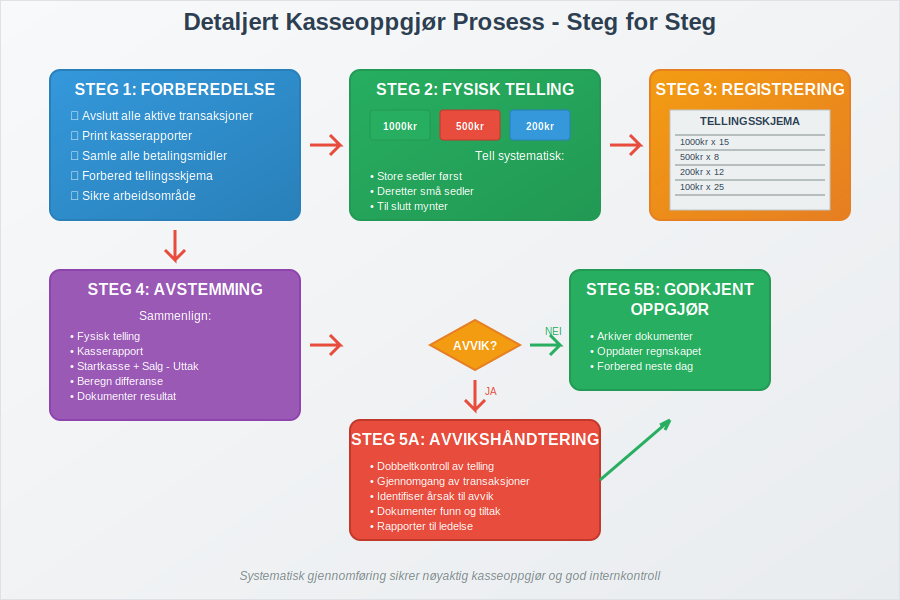
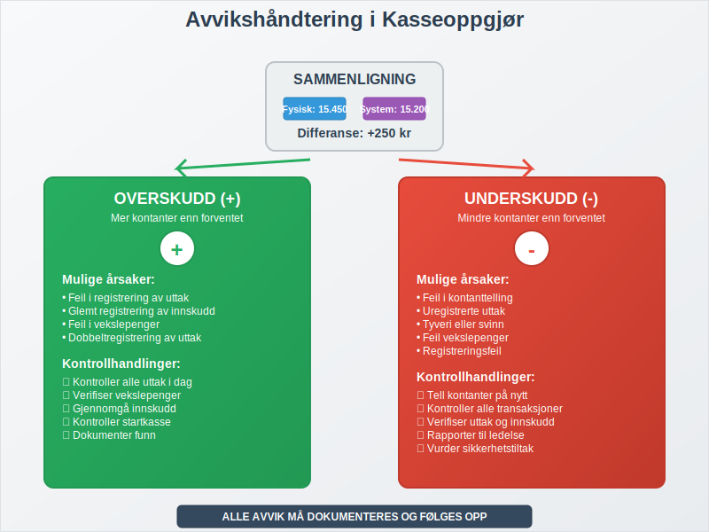
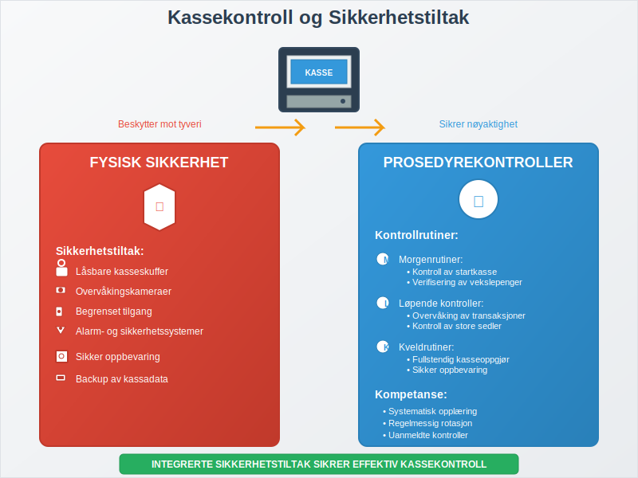
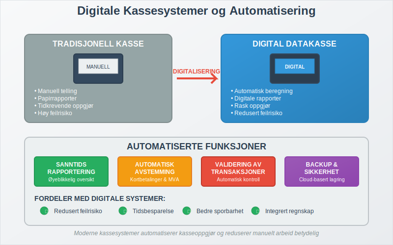
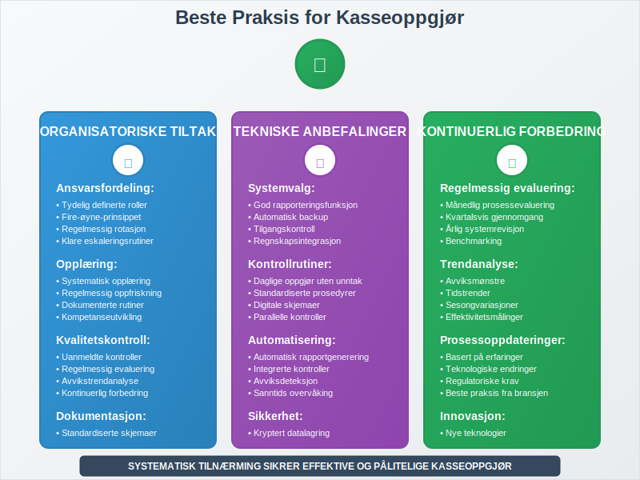
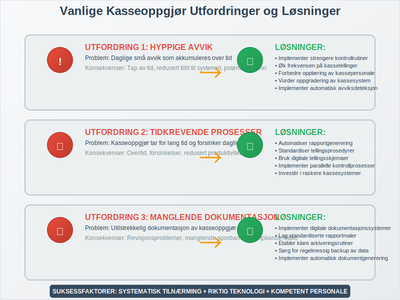

Kasseoppgjør er den daglige prosessen med å avstemme fysisk kassebeholdning mot registrerte salg og transaksjoner i kassasystemet. Dette er en kritisk kontrollrutine som sikrer at alle kontanttransaksjoner er korrekt registrert og at det ikke er avvik mellom faktisk kontantbeholdning og det som er registrert i datakassen. Kasseoppgjør er en sentral del av internkontrollen og bidrar til å opprettholde god regnskapsskikk. Mange virksomheter oppbevarer kontanter i en kontantkasse før den daglige avstemmingen.
Seksjon 1: Hva er Kasseoppgjør?
Kasseoppgjør er en systematisk avstemmingsprosess som utføres daglig, vanligvis ved slutten av arbeidsdagen eller skiftet. Prosessen innebærer å sammenligne den fysiske kontantbeholdningen i kassen med de registrerte salgstransaksjonene i kassasystemet. Dette er en form for avstemming som sikrer at alle kontanttransaksjoner er korrekt dokumentert.

Formål med Kasseoppgjør
Kasseoppgjør har flere viktige formål:
- Kontroll av kontantbeholdning: Sikre at fysisk kontant stemmer med registrerte transaksjoner
- Oppdagelse av feil: Identifisere feil i registrering eller håndtering av kontanter
- Forebygging av svinn: Redusere risiko for tyveri eller feilaktig håndtering
- Regnskapsmessig nøyaktighet: Sikre korrekt bokføring av kontantsalg
- Overholdelse av lovkrav: Oppfylle krav i bokføringsloven
Seksjon 2: Kasseoppgjør Prosess - Steg for Steg
En systematisk tilnærming til kasseoppgjør sikrer konsistens og nøyaktighet. Prosessen kan variere avhengig av bedriftens størrelse og kassasystemets kompleksitet.

2.1 Forberedelse
Før kasseoppgjøret starter, må følgende forberedelser gjøres:
- Avslutt alle aktive transaksjoner: Sørg for at alle salg er fullført og registrert
- Print kasserapporter: Generer dagsoppgjør fra kassasystemet
- Samle alle betalingsmidler: Inkluder kontanter, kort-kvitteringer, og andre betalingsmidler
- Forbered tellingsskjema: Bruk standardiserte skjemaer for konsistent dokumentasjon
2.2 Fysisk Telling av Kontanter
Den fysiske tellingen må utføres systematisk og nøyaktig:
| Valør | Antall | Verdi |
|---|---|---|
| 1000 kr | ___ | ___ |
| 500 kr | ___ | ___ |
| 200 kr | ___ | ___ |
| 100 kr | ___ | ___ |
| 50 kr | ___ | ___ |
| 20 kr | ___ | ___ |
| 10 kr | ___ | ___ |
| 5 kr | ___ | ___ |
| 1 kr | ___ | ___ |
| Total | ___ |
2.3 Avstemming mot Kassasystem
Sammenlign den fysiske tellingen med kassasystemets rapporter:
- Startkasse: Kontantbeholdning ved dagens start
- Kontantsalg: Totalt kontantsalg registrert i systemet
- Uttak: Eventuelle uttak fra kassen (vekslepenger, utlegg)
- Innskudd: Eventuelle innskudd til kassen
- Forventet sluttkasse: Startkasse + Kontantsalg - Uttak + Innskudd
Seksjon 3: Håndtering av Avvik
Når det oppstår avvik mellom fysisk kasse og kassasystem, må dette håndteres systematisk og dokumenteres grundig.

3.1 Typer Avvik
Overskudd (Pluss):
- Mer kontanter enn forventet
- Kan skyldes feil i registrering eller glemt registrering av innskudd
Underskudd (Minus):
- Mindre kontanter enn forventet
- Kan skyldes feil i utbetaling, tyveri, eller registreringsfeil
3.2 Avviksanalyse
Ved avvik må følgende kontroller utføres:
- Dobbeltkontroll av telling: Tell kontantene på nytt
- Gjennomgang av transaksjoner: Kontroller dagens alle transaksjoner
- Kontroll av vekslepenger: Verifiser alle vekslepenger-transaksjoner
- Gjennomgang av refusjoner: Kontroller eventuelle refusjoner eller returner
- Dokumentasjon: Registrer alle funn og korrigeringer
3.3 Dokumentasjon av Avvik
Alle avvik må dokumenteres med:
- Dato og tidspunkt for oppdagelsen
- Avvikets størrelse (beløp)
- Mulig årsak til avviket
- Korrigerende tiltak som er iverksatt
- Ansvarlig person som har utført kontrollen
- Oppfølging som er planlagt
Seksjon 4: Kassekontroll og Sikkerhet
Effektiv kassekontroll går utover det daglige kasseoppgjøret og inkluderer flere sikkerhetstiltak og kontrollrutiner.

4.1 Daglige Kontrollrutiner
Morgenrutiner:
- Kontroll av startkasse mot forrige dags sluttkasse
- Verifisering av vekslepenger
- Kontroll av kassasystemets funksjonalitet
Løpende kontroller:
- Regelmessig kontroll av store sedler
- Overvåking av uvanlige transaksjoner
- Kontroll av kortbetalinger mot kvitteringer
- Uttrekk av X-rapport for mellomkontroll av salg og kassebeholdning
Kveldrutiner:
- Fullstendig kasseoppgjør
- Sikker oppbevaring av kontanter
- Backup av kassadata
4.2 Sikkerhetstiltak
Fysisk sikkerhet:
- Låsbare kasseskuffer
- Begrenset tilgang til kassen
- Overvåkingskameraer
- Alarm- og sikkerhetssystemer
Prosedyremessig sikkerhet:
- Tydelige retningslinjer for kassehåndtering
- Regelmessig opplæring av personale
- Rotasjon av kasseansvar
- Uanmeldte kontroller
Seksjon 5: Digitale Kassesystemer og Automatisering
Moderne datakasser har revolutjonert kasseoppgjørsprosessen ved å automatisere mange av de manuelle oppgavene.

5.1 Automatiserte Funksjoner
Automatisk rapportgenerering:
- Sanntids salgsoversikt
- Automatiske dagsoppgjør
- Detaljerte transaksjonslogger
- Avviksrapporter
Integrerte kontroller:
- Automatisk avstemming av kortbetalinger
- Kontroll av MVA-beregninger
- Validering av transaksjoner
- Backup og datasikkerhet
5.2 Fordeler med Digitale Systemer
- Redusert feilrisiko: Automatiske beregninger minimerer menneskelige feil
- Tidsbesparelse: Raskere kasseoppgjør og rapportering
- Bedre sporbarhet: Komplett transaksjonshistorikk
- Integrert regnskap: Automatisk overføring til regnskapssystem
Seksjon 6: Lovkrav og Regnskapsføring
Kasseoppgjør er ikke bare en intern kontrollrutine, men også et lovpålagt krav som må følges for å opprettholde god regnskapsskikk.
6.1 Lovmessige Krav
I henhold til bokføringsloven og bokføringsforskriften må bedrifter:
- Dokumentere alle kontanttransaksjoner med tilstrekkelig detalj
- Oppbevare kasserapporter i minimum 5 år
- Sikre sporbarhet fra kasseoppgjør til hovedbok
- Implementere internkontroll for kontanthåndtering
6.2 Regnskapsføring av Kasseoppgjør
Kasseoppgjøret må reflekteres korrekt i regnskapet:
Daglige posteringer:
Kasse (kontanter) XX.XXX
Salgsinntekter XX.XXX
Utgående MVA X.XXX
Avvikshåndtering:
Kassedifferanser XXX
Kasse (kontanter) XXX
6.3 Revisjonsaspekter
Revisorer vil typisk kontrollere:
- Konsistens i kasseoppgjørsprosedyrer
- Dokumentasjon av avvik og oppfølging
- Internkontrollsystemer for kontanthåndtering
- Sporbarhet fra kasseoppgjør til regnskap
Seksjon 7: Beste Praksis og Anbefalinger
For å sikre effektive og pålitelige kasseoppgjør, bør bedrifter følge etablerte beste praksis.

7.1 Organisatoriske Tiltak
Ansvarsfordeling:
- Tydelig definerte roller og ansvar
- Segregering av oppgaver (fire-øyne-prinsippet)
- Regelmessig rotasjon av kasseansvar
- Klare eskaleringsrutiner ved avvik
Opplæring og kompetanse:
- Systematisk opplæring av nytt personale
- Regelmessig oppfriskning av prosedyrer
- Dokumenterte arbeidsrutiner
- Kompetanseutvikling innen kassehåndtering
7.2 Tekniske Anbefalinger
Systemvalg:
- Velg kassesystem med god rapporteringsfunksjonalitet
- Sørg for automatisk backup av data
- Implementer tilgangskontroll og brukerrettigheter
- Integrer med regnskapssystem for effektiv bilagsføring
Kontrollrutiner:
- Utfør daglige kasseoppgjør uten unntak
- Implementer uanmeldte kontroller
- Bruk standardiserte skjemaer og prosedyrer
- Dokumenter alle avvik grundig
7.3 Kontinuerlig Forbedring
- Regelmessig evaluering av kasseoppgjørsprosesser
- Analyse av avvikstrender for å identifisere systemiske problemer
- Oppdatering av prosedyrer basert på erfaringer og endringer
- Benchmarking mot bransjestandarder
Seksjon 8: Vanlige Utfordringer og Løsninger
Mange bedrifter møter lignende utfordringer med kasseoppgjør. Her er de mest vanlige problemene og anbefalte løsninger.

8.1 Hyppige Avvik
Problem: Daglige små avvik som akkumuleres over tid
Løsninger:
- Implementer strengere kontrollrutiner
- Øk frekvensen på kassetellinger
- Forbedre opplæring av kassepersonale
- Vurder oppgradering av kassesystem
8.2 Tidkrevende Prosesser
Problem: Kasseoppgjør tar for lang tid og forsinker daglig drift
Løsninger:
- Automatiser rapportgenerering
- Standardiser tellingsprosedyrer
- Bruk digitale tellingsskjemaer
- Implementer parallelle kontrollprosesser
8.3 Manglende Dokumentasjon
Problem: Utilstrekkelig dokumentasjon av kasseoppgjør og avvik
Løsninger:
- Implementer digitale dokumentasjonssystemer
- Lag standardiserte rapportmaler
- Etabler klare arkiveringsrutiner
- Sørg for regelmessig backup av data
Seksjon 9: Fremtiden for Kasseoppgjør
Teknologisk utvikling endrer hvordan kasseoppgjør utføres, med økt automatisering og digitalisering.
9.1 Teknologiske Trender
Kunstig intelligens:
- Automatisk avviksdeteksjon
- Prediktiv analyse av kassemønstre
- Intelligent rapportering og varsling
Kontantløse betalinger:
- Redusert behov for fysisk kasseoppgjør
- Økt fokus på digital avstemming
- Integrerte betalingsløsninger
Cloud-baserte systemer:
- Sanntids tilgang til kassadata
- Automatisk backup og sikkerhet
- Sentralisert kontroll og rapportering
9.2 Regulatoriske Endringer
- Økte krav til digitalisering av regnskapsdata
- Strengere kontrollkrav for kontanthåndtering
- Automatiserte rapporteringsforpliktelser til myndigheter
Kasseoppgjør vil fortsette å være en kritisk del av internkontrollen, men prosessene vil bli mer automatiserte og integrerte med andre regnskapsfunksjoner. Bedrifter som investerer i moderne kassesystemer og følger beste praksis vil være best posisjonert for fremtiden.